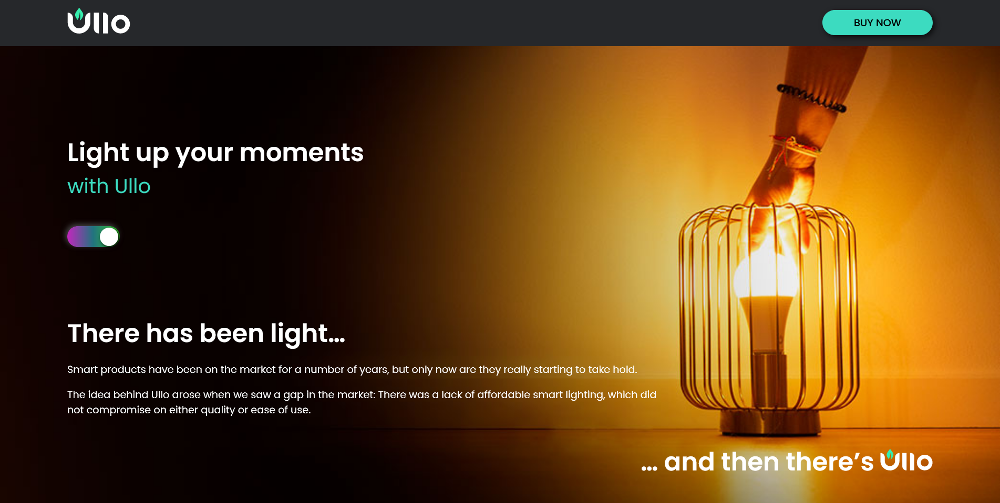
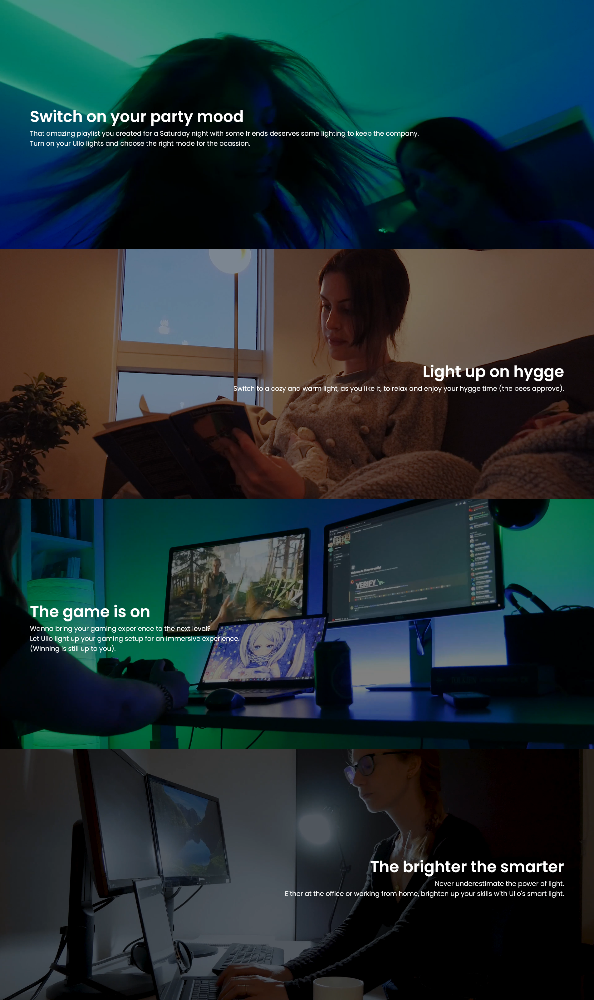
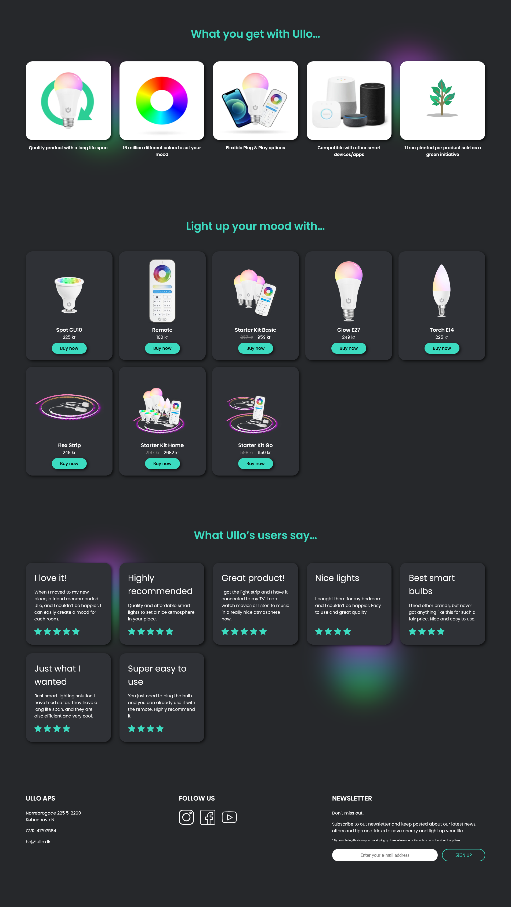

What was it about
Our goal was to create a digital campaign for Ullo so that they can strengthen their online presence in the Danish market. The projects was divided into multiple tasks, including creating content, social media strategy and campaign landing page. On the website we tried to implement features and elements based on insights from our user research.
New coding skills
Below the fold there are a few background videos played in a loop. Well optimized website should load as fast as possible, so we compressed the videos to webm format and we also added a lazy loading tag to each image. In the page we incorporated as well a newsletter sign up. When the customer submits it, the email will be stored by the POST method in our database.
 